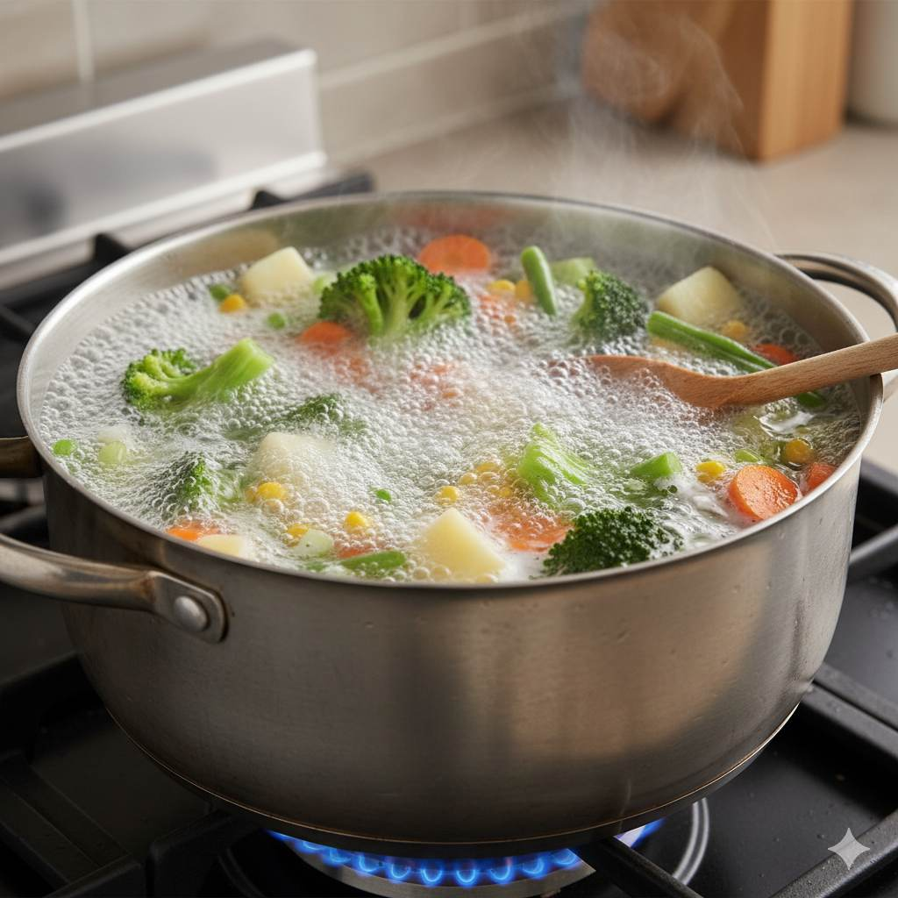

Did you know that how you cook your vegetables could be stripping away up to 50% of their vitamins? As a chef with over 15 years of experience, I've discovered that the secret to truly healthy eating isn't just about what you cook—it's about how you cook it.
The Nutrient Preservation Principle
When we think about healthy eating, we often focus on which foods to choose. But the cooking methods we use can dramatically impact the nutritional value of those carefully selected ingredients. Water-soluble vitamins like vitamin C and B vitamins are particularly vulnerable to heat, water, and air exposure.
Through my culinary journey, I've learned that understanding the science behind nutrient retention can transform your cooking from merely delicious to truly nourishing. The goal isn't to avoid cooking altogether—some cooking methods actually enhance nutrient bioavailability.
Let's explore how different cooking techniques affect the vitamins, minerals, and antioxidants in your food, and how you can optimize your approach for maximum health benefits without sacrificing flavor.
Steaming: The Gentle Giant of Nutrient Preservation
Steaming is arguably the champion when it comes to preserving water-soluble vitamins. Since the food doesn't come into direct contact with water, fewer nutrients leach out. Studies from the Journal of Food Science show that steaming broccoli retains up to 90% of its vitamin C content, compared to just 34% when boiled.
What I love about steaming is that it maintains the natural crispness and vibrant color of vegetables. The gentle heat helps break down cell walls just enough to make certain antioxidants more available to our bodies without destroying heat-sensitive nutrients.
For the best results, steam vegetables until they're just tender but still slightly crisp. Over-steaming can still cause significant nutrient loss. I recommend using a bamboo steamer or a stainless steel steaming basket for even heat distribution.
Sautéing and Stir-Frying: Quick Heat for Maximum Retention
When done correctly, sautéing and stir-frying can be excellent methods for preserving nutrients. The key is using high heat for a short duration, which minimizes the exposure time that could degrade sensitive compounds.
Research published in Food Chemistry found that stir-frying vegetables like bell peppers and broccoli actually increased the availability of certain carotenoids—powerful antioxidants that our bodies can use more effectively after gentle cooking.
My professional tip: Use healthy oils with high smoke points like avocado or coconut oil, and keep the pieces uniform for even cooking. The quick cooking process seals in flavors while preserving the nutritional integrity of your ingredients.
Roasting and Baking: Enhancing Flavor While Preserving Nutrients
Roasting and baking use dry heat to cook food, which can help preserve nutrients that would otherwise leach into cooking water. While some heat-sensitive vitamins like vitamin C may decrease, the concentration of other nutrients can actually increase as water evaporates.
According to the USDA, roasting vegetables like carrots and tomatoes can enhance the bioavailability of antioxidants like lycopene and beta-carotene. The caramelization that occurs during roasting also creates complex flavor compounds that make vegetables more appealing.
To maximize nutrient retention when roasting, I recommend using moderate temperatures (around 400°F/200°C) and cutting vegetables into similar-sized pieces for even cooking. A light coating of oil helps conduct heat while adding healthy fats that increase the absorption of fat-soluble vitamins.
Boiling: The Nutrient Thief (And How to Minimize Loss)
Boiling is perhaps the most notorious method for nutrient loss, with studies showing that up to 50-60% of water-soluble vitamins can leach into cooking water. However, there are ways to minimize this loss if boiling is your preferred method.
My professional advice: Use the minimum amount of water needed, bring it to a boil before adding vegetables, and cook for the shortest time possible. Better yet, save the nutrient-rich cooking water to use in soups, sauces, or to cook grains.
Interestingly, boiling can be beneficial for some foods. For example, boiling carrots actually increases their antioxidant capacity by breaking down cell walls and making carotenoids more available. The key is understanding which foods benefit from which cooking methods.
